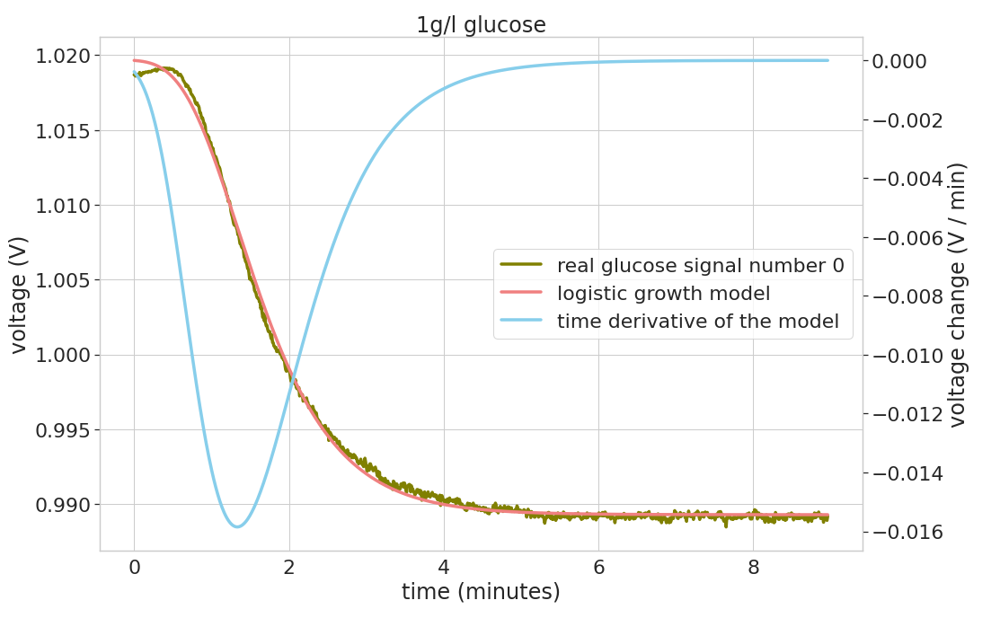

Predicting Glucose Time-Series¶
Purpose¶
The python package glucose_ts will help you to measure glucose concentrations closer to real time. When you measure a glucose concentration with a enzyme based sensor you normally have to wait for 5 - 10 minutes to get the glucose concentration. This projects aims for telling you this value earlier.
{kind=link}
The green curve is the actual measurements of the glucose sensor. The orange curve is a generalized logistics growth model that is fitted to the sensor data. This model gets all the sensor measurements to fit a model. The idea would be to get the final voltage much earlier.
To ease the usage this package tries to follow the guidelines of scikit-learn estimators https://scikit-learn.org/stable/developers/develop.html. In practise the usage looks like this:
import glucose_ts
trained_model = glucose_ts.models.ExponentialDecay().fit(points_in_time, labels)
trained_model.predict(points_in_time)
Features¶
The package implements the following methods to explain and predict the glucose sensor voltage signal
exponential decay
logistic growth
generalized logistic growth
Installation¶
Install the glucose package using pip by
cd glucose-prediction
pip install -e .
Here we assume that you want to install the package in editable mode, because you would like to contribute to it. This package is not available on PyPI, it might be in the future, though.
Contribute¶
Issue Tracker: https://git.tu-berlin.de/ch.lange/glucose-prediction/-/issues
Source Code: https://git.tu-berlin.de/ch.lange/glucose-prediction
Support¶
If you encounter issues, please let us know.